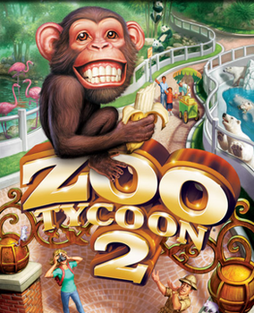
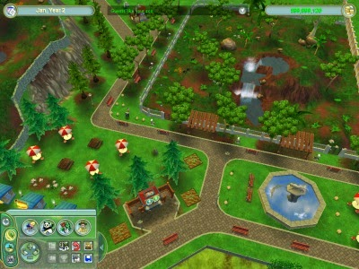

Zoo Tycoon 2 is a business simulation video game developed by Blue Fang Games and published by Microsoft Game Studios and MacSoft.
What the game is about
The gameplay revolves around creating suitable exhibits for animals through habitat modifications (ground cover, water, elevation, foliage and rocks and a variety of items including food, enrichment and shelter) which fulfill the animal's needs (habitat, hunger, thirst, stimulation, privacy, sleep, social, exercise). Guests will visit the zoo to see the animals, and they also have needs that need to be fulfilled through scenery and buildings (hunger, thirst, bathroom, seating, entertainment).
 Click here to find out more.